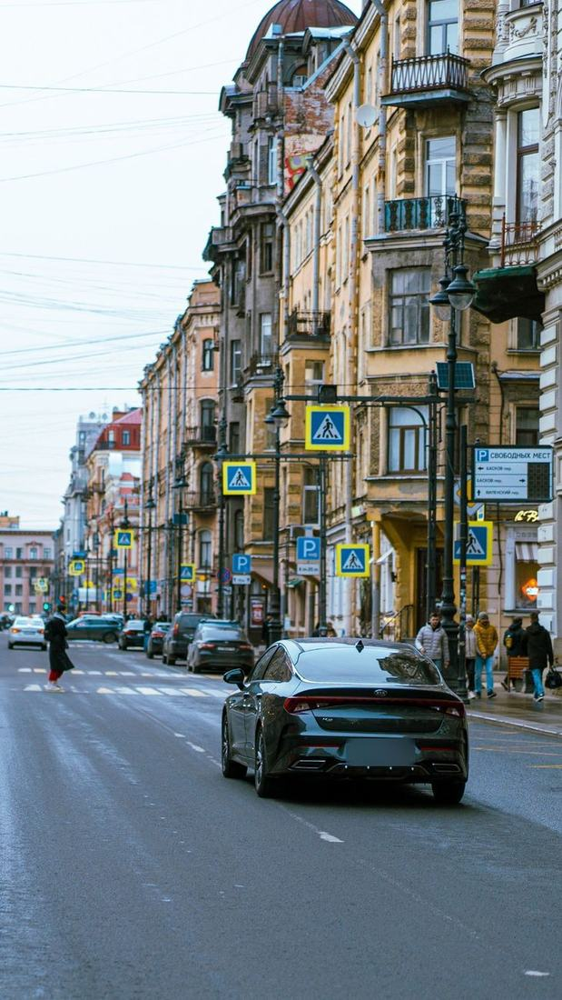
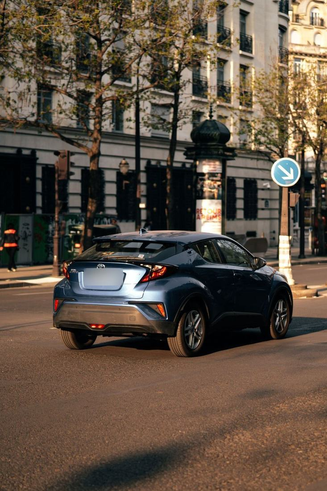
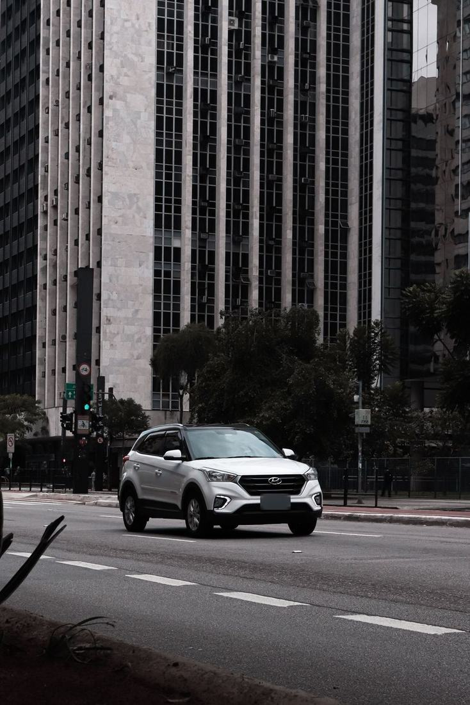
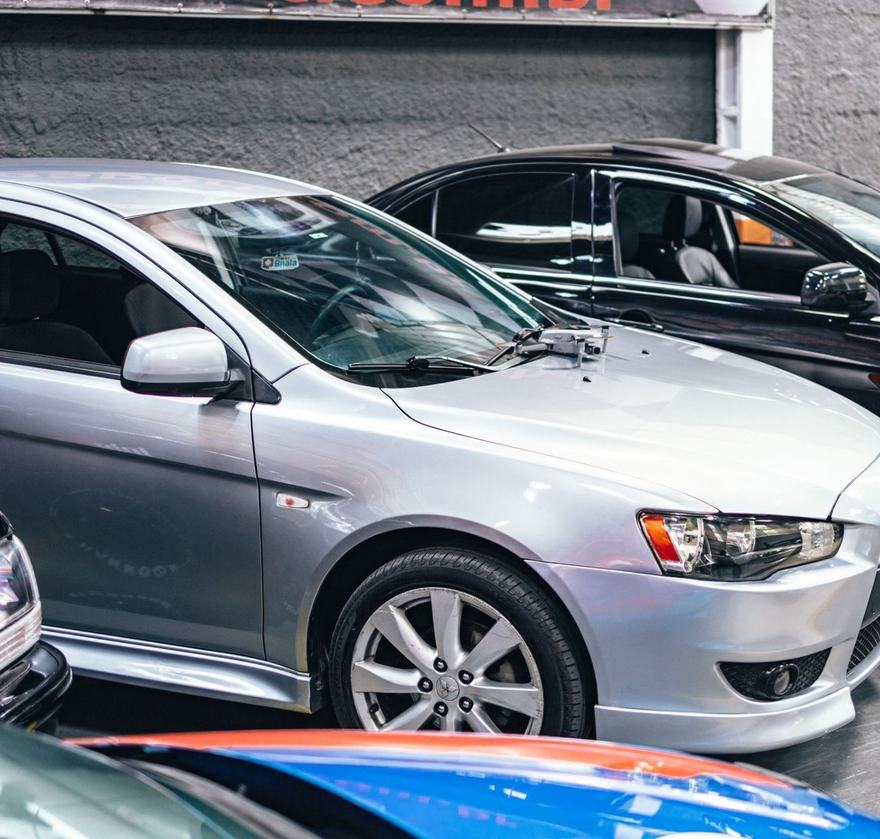
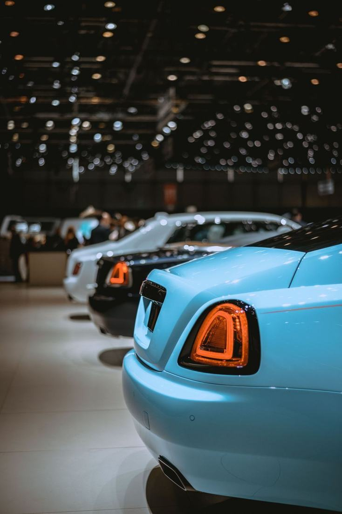
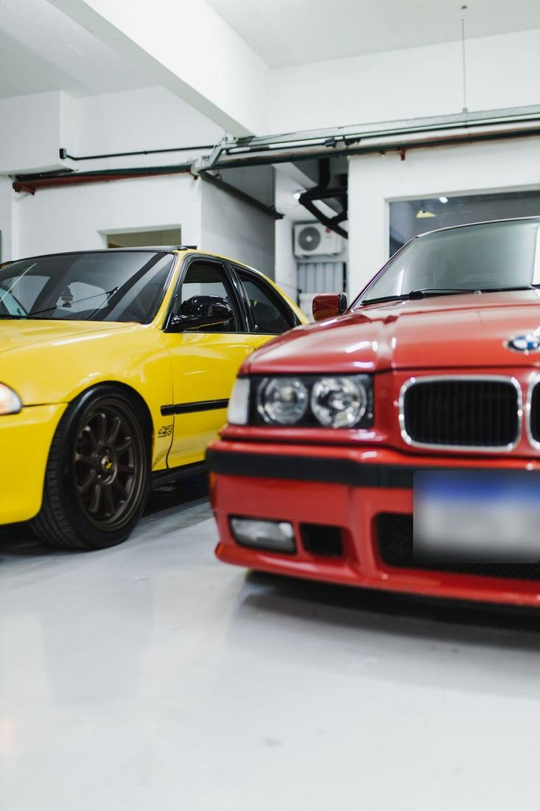

Cepadech
Primera & segunda mano
Revisados · Garantizados · Financiados
El carro que buscas, sin rodeos
Ver inventarioPrimera & segunda mano
Revisados · Garantizados · Financiados
El carro que buscas, sin rodeos
Ver inventarioInventario
Cada carro pasa por nuestro taller antes de llegar a la exposición. Filtra por primera o segunda mano y reserva tu prueba en un clic.

Desde 32.900 €
Lo quiero
Precio 27.400 €
Lo quiero
Precio 17.900 €
Lo quiero
Precio 9.800 €
Lo quiero
Precio 219.000 €
Lo quiero
Por qué Cepadech
Llevamos 15 años vendiendo carros con una sola regla: si no lo compraríamos para nuestra familia, no entra en la exposición. Por eso cada vehículo llega revisado, documentado y con garantía.
Motor, frenos, electrónica, chasis y papeles. Si algo no está perfecto, se repara antes de la venta.
Cobertura mecánica en los carros de segunda mano y la garantía oficial del fabricante en los nuevos.
Trae tu carro actual, lo valoramos al momento y lo descontamos del precio del siguiente.
Historial de mantenimiento y kilómetros verificados. Sin sorpresas después de firmar.
Financiación
Trabajamos con varias entidades para conseguirte la mejor cuota. Ajusta entrada y plazo, y recibe respuesta en menos de 24 horas.
Encuentra tu carro en la exposición o en nuestro inventario online.
Agenda una prueba de manejo sin compromiso, cuando te venga bien.
Elige entrada y plazo. Si tienes carro, lo tasamos como parte de pago.
Nos encargamos de papeles y transferencia. Entrega en 72 horas.
Opiniones
4,9 Media de 860 reseñas verificadas
★★★★★
Buscaba un SUV de segunda mano y me daba miedo comprar a ciegas. Me enseñaron el informe de revisión punto por punto. Seis meses después, ni un susto.
★★★★★
Entregué mi carro viejo como parte de pago y esa misma mañana salí con el C-HR. La tasación fue justa y los papeles los hicieron ellos.
★★★★★
Con el simulador ya sabía la cuota antes de ir. Me aprobaron la financiación al día siguiente y la entrega fue impecable.